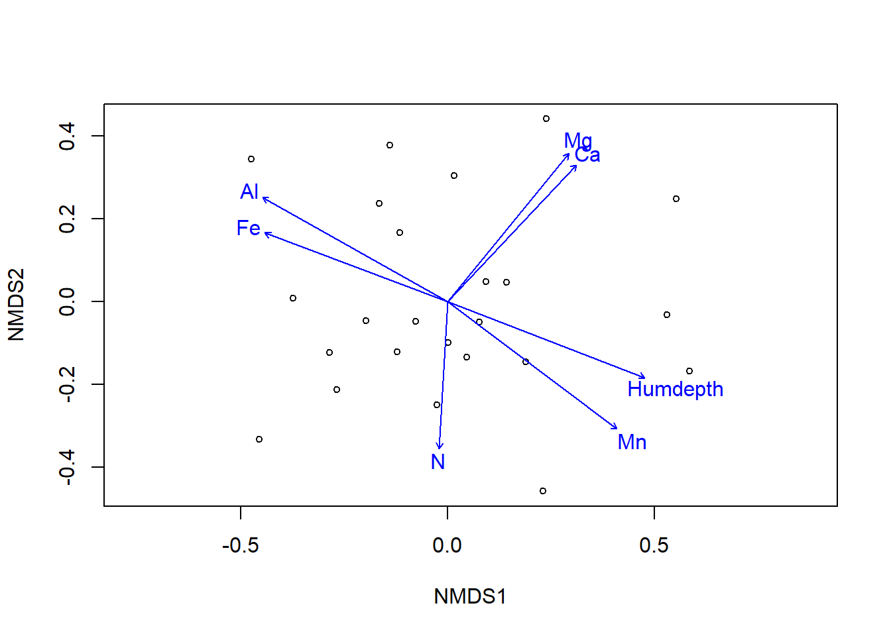

Capítulo 4 Interpretación ambiental
Como lo mencionamos previamente las ordenaciones indirectas no sirven para testar hipótesis, este método nos permite organizar nuestras variables en un espacio dimensional más reducido. Sin embargo, podríamos usar estos ejes y relacionarlos con variables ambientales. Vamos a usar el paquete vegan para ajustar un modelo que permita evaluar el efecto de las variables ambientales a la ordenación.
data(varechem)
data(varespec)
vare.mds <- metaMDS(varespec, trace = FALSE)
ef <- envfit(vare.mds, varechem, permu = 999)
ef##
## ***VECTORS
##
## NMDS1 NMDS2 r2 Pr(>r)
## N -0.05733 -0.99836 0.2536 0.049 *
## P 0.61971 0.78483 0.1938 0.091 .
## K 0.76644 0.64231 0.1809 0.125
## Ca 0.68520 0.72836 0.4119 0.004 **
## Mg 0.63252 0.77454 0.4270 0.003 **
## S 0.19139 0.98151 0.1752 0.145
## Al -0.87161 0.49021 0.5269 0.001 ***
## Fe -0.93601 0.35197 0.4451 0.003 **
## Mn 0.79874 -0.60167 0.5231 0.001 ***
## Zn 0.61754 0.78654 0.1879 0.104
## Mo -0.90311 0.42942 0.0609 0.518
## Baresoil 0.92488 -0.38025 0.2508 0.063 .
## Humdepth 0.93284 -0.36028 0.5201 0.001 ***
## pH -0.64803 0.76162 0.2308 0.072 .
## ---
## Signif. codes: 0 '***' 0.001 '**' 0.01 '*' 0.05 '.' 0.1 ' ' 1
## Permutation: free
## Number of permutations: 999Ahora podemos ver las variables que son significativas para explicar la ordenación de los datos.
plot(vare.mds, display = "sites")
plot(ef, p.max = 0.05)
Con variables categóricas podríamos hacer el mismo procedimiento pero tener una grafica de salida un poco diferente.
ef <- envfit(ca.dune, dune.env, permutations = 999)
ef##
## ***VECTORS
##
## CA1 CA2 r2 Pr(>r)
## A1 0.998160 0.060614 0.3104 0.041 *
## ---
## Signif. codes: 0 '***' 0.001 '**' 0.01 '*' 0.05 '.' 0.1 ' ' 1
## Permutation: free
## Number of permutations: 999
##
## ***FACTORS:
##
## Centroids:
## CA1 CA2
## Moisture1 -0.7484 -0.1423
## Moisture2 -0.4652 -0.2156
## Moisture4 0.1827 -0.7315
## Moisture5 1.1143 0.5708
## ManagementBF -0.7258 -0.1413
## ManagementHF -0.3867 -0.2960
## ManagementNM 0.6517 1.4405
## ManagementSF 0.3376 -0.6761
## UseHayfield -0.2861 0.6488
## UseHaypastu -0.0735 -0.5602
## UsePasture 0.5163 0.0508
## Manure0 0.6517 1.4405
## Manure1 -0.4639 -0.1738
## Manure2 -0.5872 -0.3600
## Manure3 0.5187 -0.3172
## Manure4 -0.2059 -0.8775
##
## Goodness of fit:
## r2 Pr(>r)
## Moisture 0.4113 0.005 **
## Management 0.4441 0.003 **
## Use 0.1845 0.099 .
## Manure 0.4552 0.007 **
## ---
## Signif. codes: 0 '***' 0.001 '**' 0.01 '*' 0.05 '.' 0.1 ' ' 1
## Permutation: free
## Number of permutations: 999plot(ca.dune, display = "sites", type = "p")
with(dune.env, ordiellipse(ca.dune, Management, kind = "se", conf = 0.95, label= TRUE))